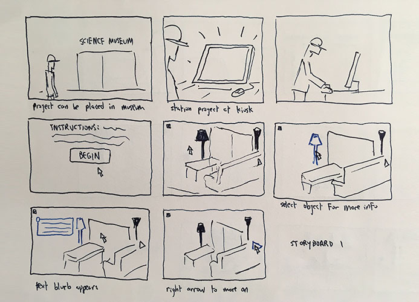
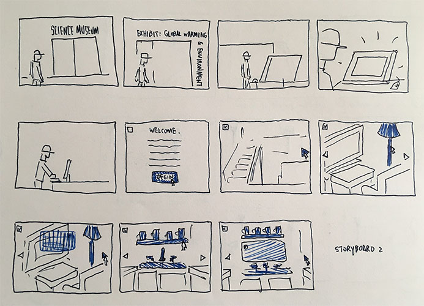

When placing the project in a science museum, the legitimate question came up as to where in the museum the project is. Also, there could have been more frames showing additional rooms of the house to better understand what is happening. I and those looking at the storyboard additionally toyed with the idea of putting the project in a department or hardware store to educate consumers, though I ultimately scrapped the idea in favor of using the project in a more academic setting.
Most notable change to the storyboard was adding a specific science museum exhibit, in this case one on the environment in order to stay with the idea of sustainability. Presentation is also cleaner with more rooms. Interesting suggestions of where the project can be applied came up in the comments as an educational tool for elementary school classes.
